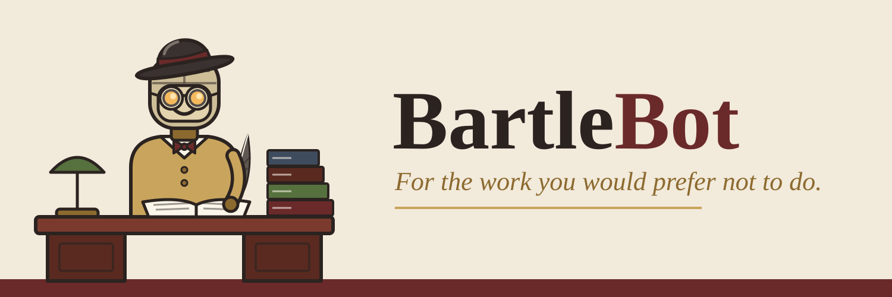
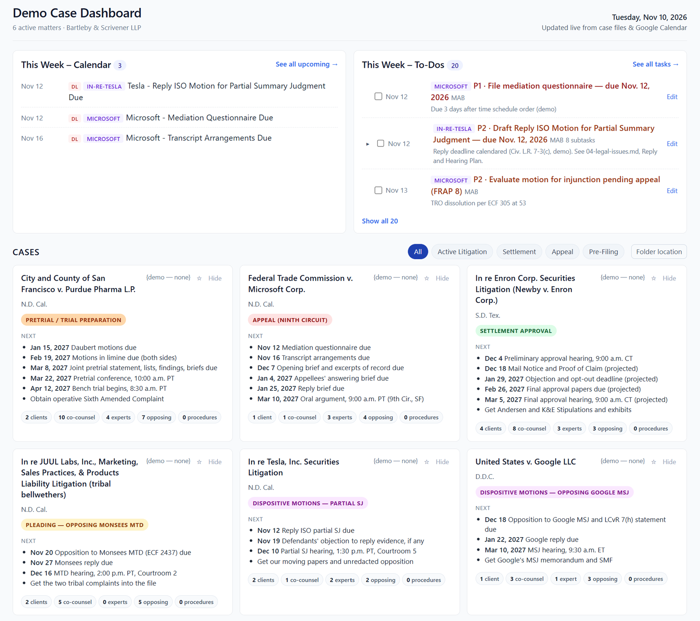
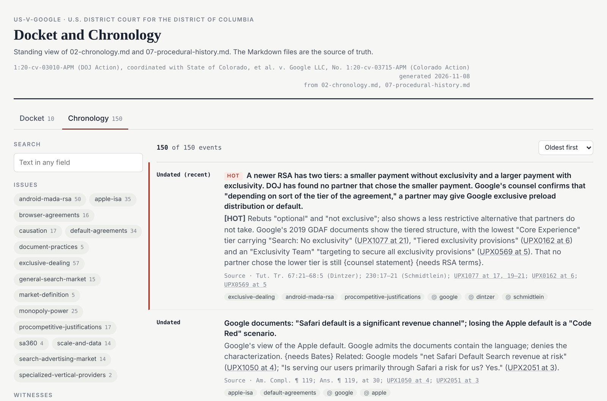
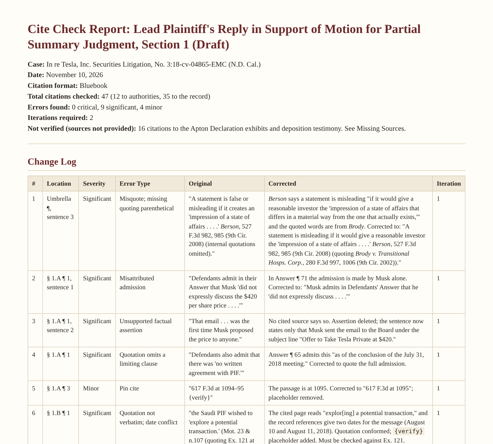
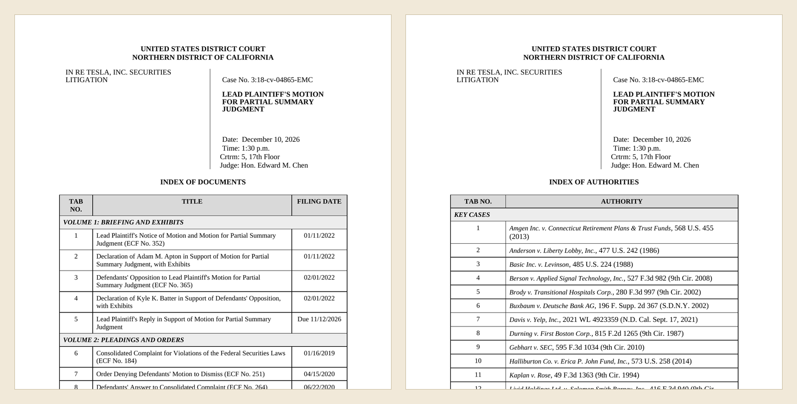
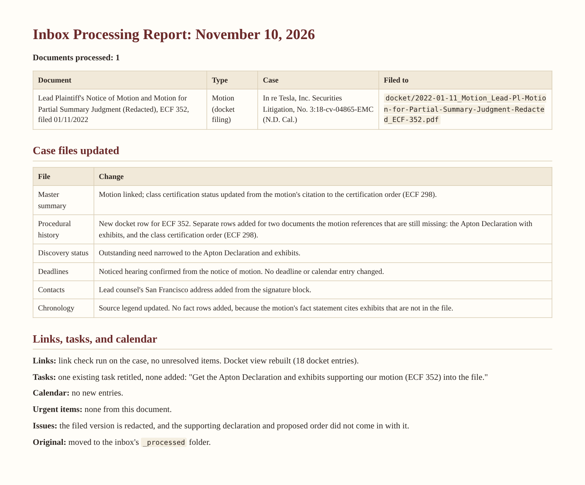

Every case on one page
The Case Dashboard shows each active matter with its stage and its next deadlines, drawn from the case files. It also shows the week's calendar and open tasks. A solo lawyer sees everything; a team shares one dashboard.

BartleBot™ is a plugin for Claude, built for litigation attorneys and paralegals.
It keeps a structured case file for every matter in a folder you control. It reads what comes in, files it, and updates the chronology, the docket, the deadlines, and the task list. Then it uses that file to draft.
Every draft goes through you. BartleBot outlines first, drafts section by section, and waits for your approval at each step. Its instructions tell it to mark any fact or citation it cannot verify with a visible placeholder instead of guessing.
The Case Dashboard shows each active matter with its stage and its next deadlines, drawn from the case files. It also shows the week's calendar and open tasks. A solo lawyer sees everything; a team shares one dashboard.

BartleBot tags each event in the chronology by issue and by witness, with a citation to its source. Filter to one issue or one witness and you have a mini-chronology for a deposition or a brief. The docket gets the same treatment, sorted by pleadings, dispositive motions, and discovery motions.

Motions, responses, and replies drafted to an outline you approve, then delivered as Word documents on your own pleading templates.
Every citation checked for form, every quotation checked against the source, and every cited page checked for support. BartleBot asks for any source it does not have.

The motions, the key authorities, and an index, assembled into a tabbed, print-ready binder for the lawyer who will argue.

Drop a new filing or letter into one folder. BartleBot identifies it, files it in the right case, updates the case file, and proposes the deadlines and tasks that follow from it.

BartleBot is a set of instructions and templates that run inside your own Claude subscription and the apps you connect to it. You need a Claude plan that supports plugins.
Your case files stay in your folder. BartleBot's author does not receive or have access to your data. Whether to use an AI tool on client matters is your decision under the rules that govern your practice.
BartleBot is a drafting and organizing tool. It is not a law firm and does not give legal advice. You are responsible for reviewing and verifying everything it produces, including citations, quotations, facts, and deadlines.
BartleBot is in a free evaluation period under a short evaluation license. Feedback from working lawyers is the point of the evaluation.
BartleBot is shared by invitation during the evaluation period. To ask for an invitation, complete a short request form.
Open the request form